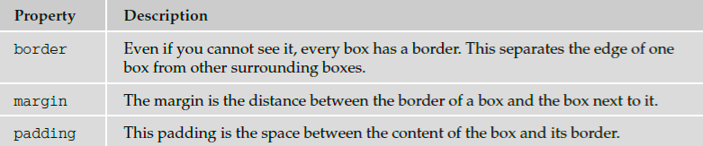

Lengths
You have already seen that the values of some CSS properties are given as lengths (such as the size of
fonts, height of lines of text, and gaps between words and letters), and you will come across more
properties whose values are expressed as lengths later in the chapter. So, let ’ s take a moment to look at
the three ways lengths can be specified in CSS:
- Relative units
- Absolute units
- Percentages
- Relative Units
There are three types of relative units: pixels, which relate to the resolution of the screen, and em ’ s and
ex ’ s both of which relate to the size of fonts.
px
The pixel , referred to in code as px , is by far the most commonly used unit of length in CSS. A pixel is the
smallest unit of resolution on a screen and if you look very closely at your screen you might just be able
to see the square dots that are the pixels.
Technically, the size of a layout that uses pixels as a unit of measurement can depend upon the viewing
medium (keep reading to see why I say “ can ” ), which is why it is counted as a relative unit.
Most computer screens have a resolution of 72 dots per inch (dpi), but you will find that laser and bubble
jet printers are usually set with a higher resolution — my current printer runs at 300 dpi. In contrast,
mobile devices can have a lower resolution than computer screens or (in the case of some smart phones
such as the iPhone) a higher resolution.
So, a table that is 500 pixels wide could be 9.9444 inches wide on a 72 dpi screen, 1.666 inches wide at
300 dpi, or 13.888 inches wide on a 32 dpi screen (and a screen that is only 32 dpi is unlikely to be that
much over 13 inches wide).
In reality, when you print a web page from your browser, it will adjust the pixels to present a readable
version of the document. In fact, CSS recommends that in such cases user agents rescale pixel units so
that reading at arm ’ s length 1 pixel would correspond to about 0.28 mm or 1/
90 of an inch.
em
An em is equivalent to the height of the current font, and because the size of fonts can vary throughout a
document, the height of the em unit can be different in different parts of the document. Furthermore,
because users can change the size of text in their browser, the em unit is capable of varying in relation to
the size of the text that the user has selected.
This means that the em unit is most commonly used for measurements of elements that contain text and
for controlling spacing between text (for example it can be used in the line - height property to set the
gaps between lines of text in relation to their height).
While the em unit is equivalent to the height of a font, it is often thought to have derived from the width
of a lowercase m ; you may also hear the term en , which equates to half an em .
ex
The ex should be the height of a lowercase x . Because different fonts have different proportions, the ex is
related to the font size and the type of font. In Figure 7 - 24, you can see the x in the Courier typeface is
smaller than the x in the Impact typeface.
Absolute Units
Generally speaking, absolute units are used far less than relative units (and you will rarely come across
designs that use these units of measurement). The following table shows the absolute units that are used
in some CSS properties.
Percentages
Percentages give a value in relation to another value. For example, if your page only contained two
paragraphs, and you wanted each to take up half of the width of the browser, then the paragraphs might
be given a width property with a value of 50% . However, if the < p > element were inside another element
that you knew was 500 pixels wide, they would take up 50 percent of the width of that containing
element (or 250 pixels) each.
Introducing the Box Model
The box model is a very important concept in CSS because it determines how elements are positioned
within the browser window. It gets its name because CSS treats every element as if it were in a box .
As you can see in the table that follows, every box has three properties you must be aware of.

You can get a better idea of these properties in Figure 7 - 25, which shows the various parts of the box
(the black line is the border).
You can use CSS to individually control the border, margin, and padding on each side of a box; you can
specify a different width, line - style and color for each side of the boxes ’ border.
The padding and margin properties are especially important in creating what designers refer to as white
space ; this is the space between the various parts of the page. For example, if you have a box with a black
border and the box contains black text, you would not want the text to touch the border because it
would make the text harder to read. Giving the box padding helps separate the text from the line around
the edge.
Meanwhile, suppose you have two boxes next to each other, both with borders. If there is not a margin
between them the boxes will run into each other, and the line where the boxes meet could look thicker
than the other lines.
An Example Illustrating the Box Model
To illustrate the box model we will add a border to each of the elements in a web page. The < body >
element creates one box that contains the whole page, and inside that box each heading, paragraph,
image, or link creates another box.